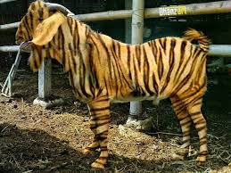
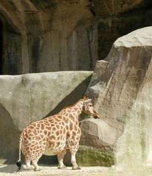

Detail Wisata Rekreasi Kota Depok
Gallery Foto



KEBUN BINATANG RAGUNAN
Kebun Binatang Ragunan adalah sebuah kebun binatang yang terletak di daerah Ragunan, Pasar Minggu, Jakarta Selatan, Indonesia. Kebun binatang seluas 140 hektare ini didirikan pada tahun 1864. Di dalamnya, terdapat berbagai koleksi yang terdiri dari 295 spesies dan 4040 spesimen.
Alamat Dan Peta Lokasi
Jl. Harsono RM No.1, Ragunan, Kec. Ps. Minggu, Kota Jakarta Selatan, Daerah Khusus Ibukota Jakarta
Testimony Dan Komentar
Nike Ardila
Tempatnya sejuk dan rapih, next time kesini lagi bareng keluarga.
Cinta Kuya
Pernah kesini bareng keluarga. Tempatnya asyik.
Jefri Nichol
Tempat ini sangat bermanfaat jadi tahu tentang berbagai hal kebinatangan.